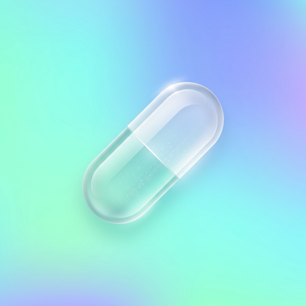

Tabletten Tracker
Dein ruhiges Tagebuch für Medikamente: Dosis, Tage und Befinden im Blick – beim Ausschleichen, Halten oder Hochdosieren.
Dosis & Tage
Siehst auf einen Blick, auf welcher Dosis du bist und seit wie vielen Tagen – auch wenn du abends wechselst.
Dein Plan
Ausschleichen, halten oder hochdosieren: Trag den Plan ein, den du mit deiner Ärztin oder deinem Arzt besprochen hast – die App erinnert dich an die Schritte.
Heute genommen
Hak deine Einnahme mit einem Tipp ab – in der App oder direkt im Widget auf dem Homescreen.
Befinden
Halte fest, wie es dir geht, und schreib kurze Kommentare – so siehst du, wie du jede Veränderung verträgst.
Verlauf & Export
Kurven, Einnahme-Statistik und ein PDF-Bericht, den du zum nächsten Arzttermin mitnehmen oder verschicken kannst.
Privat
Kein Konto, keine Werbung, kein Tracking. Deine Daten bleiben auf deinem iPhone – und auf Wunsch in deiner eigenen iCloud.
Hinweis: Tabletten Tracker ist ein persönliches Tagebuch und ersetzt keine ärztliche Beratung. Die App berechnet keine Dosierungen. Ändere deine Dosis nur nach Rücksprache mit deiner Ärztin oder deinem Arzt.